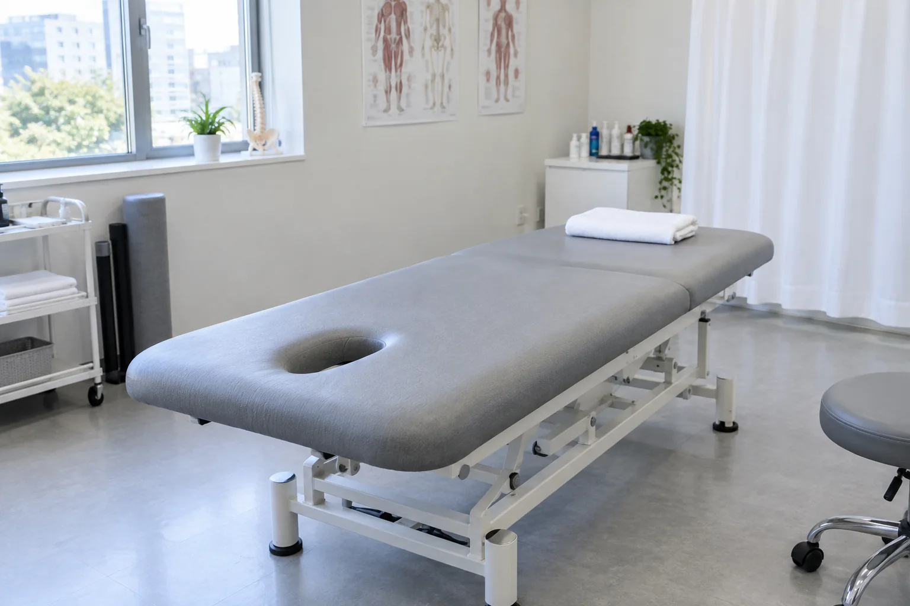
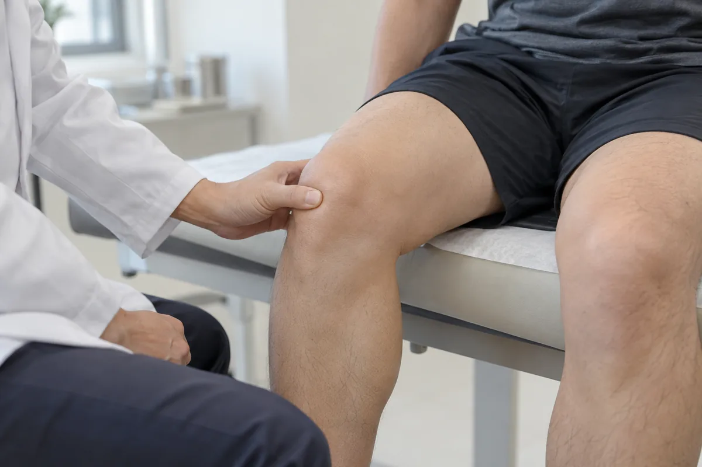
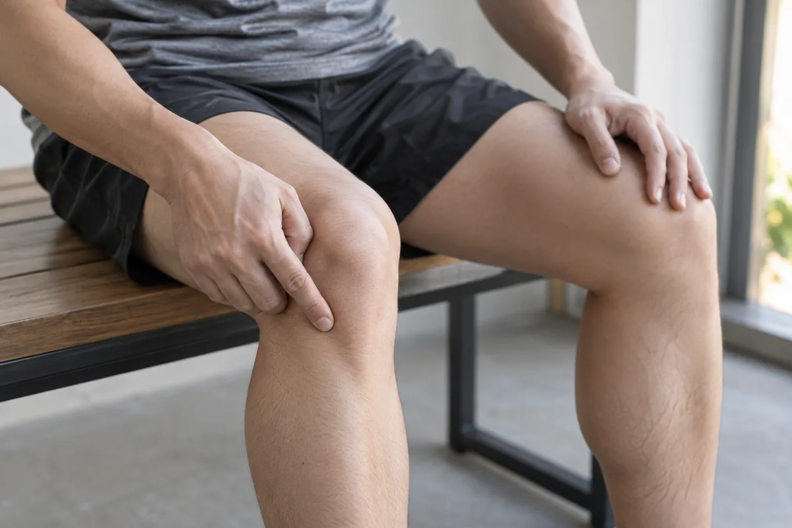

무릎
무릎은 걸을 때 체중을 지탱하는 관절로, 연골과 힘줄 등 여러 구조의 문제로 통증이 생길 수 있습니다. 계단이나 보행 시의 불편, 붓기와 잠김 증상, 움직이는 범위를 함께 확인합니다. 관절 상태와 평소 활동량을 고려해 필요한 검사와 치료 방향을 안내합니다.
통증의 위치와 움직임, 생활 습관을 함께 살핀 뒤 필요한 치료 방향을 안내합니다.
CONDITIONS
무릎 주요 질환
퇴행성 관절염
관절 표면을 덮는 연골과 주변 조직에 퇴행성 변화가 생겨 통증과 뻣뻣함이 나타나는 질환입니다. 나이가 들수록 흔하지만 이전의 무릎 손상 등도 영향을 줄 수 있습니다. 증상과 보행 상태, 관절이 움직이는 범위를 함께 살펴 관리 방향을 정합니다.
걷거나 계단을 이용할 때 무릎이 아프고, 앉았다 일어설 때 뻣뻣할 수 있습니다. 관절이 붓거나 굽히고 펴는 범위가 줄어들기도 합니다. 활동 후 통증이 커지거나 무릎에 힘이 빠지는 느낌이 들어 일상생활이 불편해질 수 있습니다.

반월상연골판 손상
허벅지뼈와 정강이뼈 사이에서 충격을 흡수하는 반월상연골판이 손상된 상태입니다. 운동 중 무릎이 비틀리며 다치거나, 나이에 따른 변화로 작은 동작에도 발생할 수 있습니다. 손상 부위와 정도, 무릎의 잠김 여부 등을 함께 평가합니다.
무릎을 굽히거나 몸의 방향을 바꿀 때 통증이 생기고 붓거나 뻣뻣해질 수 있습니다. 관절 안에서 무언가 걸리는 느낌이나 갑자기 힘이 빠지는 느낌이 들기도 합니다. 무릎이 잠겨 끝까지 펴지지 않는다면 진료를 통해 확인해야 합니다.

슬개건염
무릎 앞쪽의 슬개골과 정강이뼈를 잇는 힘줄에 반복적인 부담이 쌓여 생기는 질환입니다. 달리기나 점프, 갑작스러운 운동량 증가와 관련될 수 있습니다. 통증이 생기는 동작과 운동 강도, 허벅지 근육의 상태를 함께 살펴 평가합니다.
무릎뼈 바로 아래가 아프고 누르면 민감하게 느껴질 수 있습니다. 처음에는 운동을 시작하거나 마친 뒤에 아프다가, 점차 계단이나 의자에서 일어나는 동작도 불편해지기도 합니다. 통증이 지속되면 운동 강도를 조절하고 진료를 받아야 합니다.
슬개대퇴통증증후군(PFPS)
무릎뼈 주변과 앞쪽에 통증이 나타나는 상태로, 달리기나 계단처럼 무릎을 반복해 굽히는 활동과 관련될 수 있습니다. 갑작스러운 활동량 변화나 엉덩이·허벅지 근육의 약화 등도 영향을 줍니다. 무릎의 움직임과 다리 정렬을 함께 살펴 평가합니다.
계단을 오르내리거나 쪼그려 앉을 때 무릎 앞쪽이 둔하게 아플 수 있습니다. 무릎을 굽힌 채 오래 앉아 있다가 움직일 때 불편해지기도 합니다. 소리가 동반될 수 있지만 소리만으로 질환을 판단하지 않고 통증 양상을 함께 확인합니다.